Micrometers, invented by William Gascoigne in the 17th century, are often used to measure diameters of wires and spheres. Micrometers are the most commonly used variable reading hand tools for measuring small lengths, such as the thickness of a wire, outside diameters, inside diameters, depths and grooves and are based on the threaded screw principle. Micrometer generally provides greater precision than a caliper. Measurement within 0.002 mm or 0.0001" can be taken with vernier micrometer. However, micrometer can measure only a smaller range of lengths.
The micrometers incorporate two basic scales. One is a linear scale to measure directly the axial advancement of the spindle and is usually identical to the pitch of the micrometer screw. Other is a circumferential scale that indicates the amount of partial rotation applied to the barrel (sleeve) of the micrometer.
Micrometer scale is based on the thread principle, as a thread is turned, a large motion on the outside of the thread will result in a very small advance in the position of the thread. The operation of micrometers is based on magnification using threads. A large movement on the outside of the micrometer thimble will result in a small motion of the sleeve.
As circular movement of a threaded spindle assembly is turned, the end of the spindle moves toward or away from the fixed anvil. The distance of movement per revolution depends on the pitch of the threaded spindle. The pitch is number of threads per unit length. Generally the unit length is chosen to be either 25mm or 1inch.
The different types of micrometer available for various applications are:
The smallest measurement that can be taken by the micrometer is called its least count. It is different in English and Metric systems of measurements.
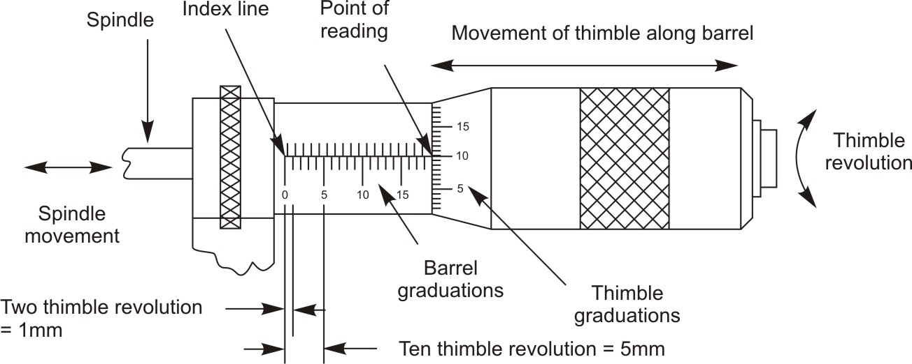
Figure 1: Head of Micrometer in Metric systemIn metric system the longitudinal line (index line) on the barrel (sleeve) is graduated in millimeters with 25 equidistant marks from 1 to 25 millimeters, and each millimeter is subdivided in half-millimeter and graduated above or below the index line, 0.5 millimeter graduations are known as subdivisions.
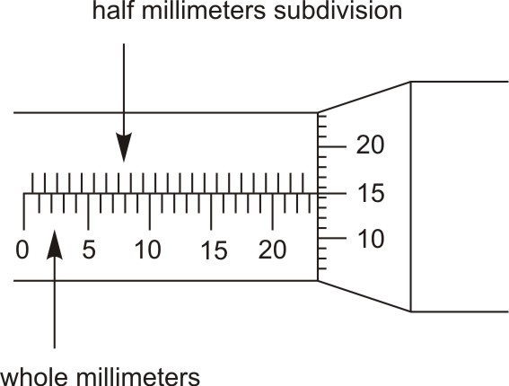
Figure 2: Each millimeter subdivided into half millimeterInside the sleeve, a spindle is threaded with 50 threads in 25 mm. These threads have a pitch of 0.5 mm.
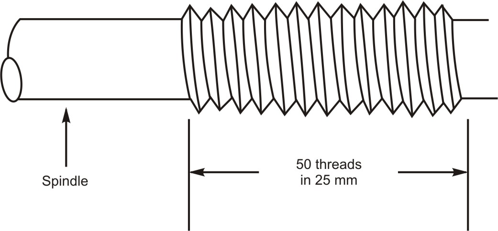
Figure 3: Pitch of spindle in metric systemThe beveled edge of the moving thimble is graduated around with 50 equal divisions, each graduation of 0.01mm. Every fifth line is numbered from 0 to 50.
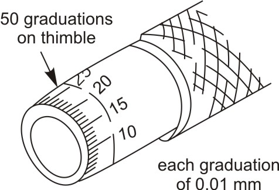
Figure 4: Circumferential scale on the thimble is graduated with 50 equal divisions each of 0.01mmEach complete revolution of the thimble will expose another graduation (mark) on the sleeve (barrel) and advances the spindle towards or away from anvil by 0.5 millimeters. For instance, a partial revolution from one thimble mark to the next is 1/50th of a revolution, i.e. 1/50 × 0.5. This moves the spindle by 0.01 millimeter.
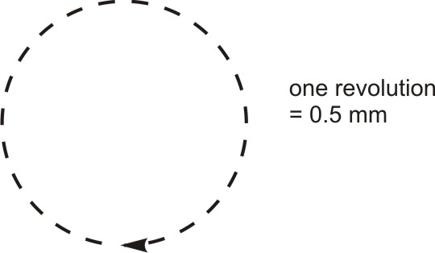
Figure 5: One revolution of thimble in metric system translates the spindle by 0.5 mmThis means each graduation on the thimble is equal to 1/50 of 0.5 millimeter or 0.01 millimeter. Thus least count of metric micrometer is 0.01 mm.
There are two separate rows of lines on the sleeve of the metric micrometer. The lower row represents whole millimeter graduations i.e. 1 mm, 2 mm, 3 mm etc. and the upper row represents half-millimeter i.e. each graduation (mark) of 0.5 mm. Each complete turn of the thimble moves the spindle 0.5 mm. The circumferential scale on the thimble is separated into 50 equal divisions each of 0.01 mm.
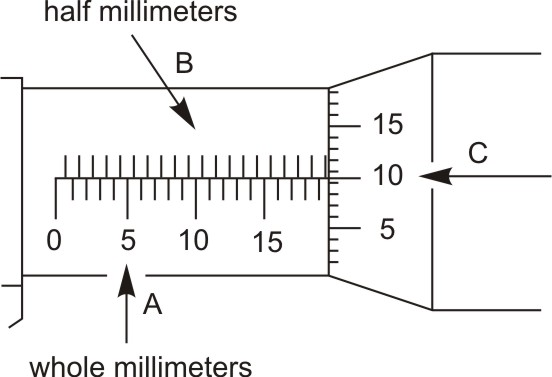
Figure 6: Spacing between graduations on the barrel and thimbleThe metric micrometer reading is established by three additions. The values to be added are:
(An example of how to read the micrometer is shown)
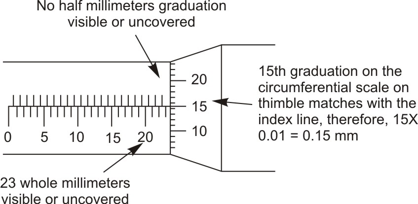
Figure 7: Taking a metric micrometer readingExample-1
Main linear scale reading + [Thimble reading × Least count]
Where, Least Count = (number of complete turns of thimble required to move the thimble one division on main linear scale × number of divisions on circumferential scale) ÷ smallest division on main linear scale
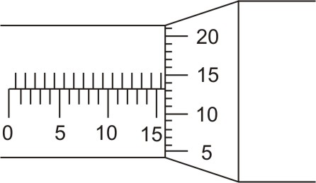
Figure 8: Metric micrometer readingThe addition of the Vernier scale to the barrel of a micrometer extends its use in making more precise measurements. The vernier metric micrometer has the ability to measure to two thousandths of a millimeter (0.002mm). This reading is added to the three place reading. The result is a four-place vernier micrometer reading. The vernier is graduated in increments of 0.002 mm starting and ending with 0. If either 0 on the vernier graduation scale lines up with the thimble reading, no additional thousandths of a millimeter are added to the reading. The two-thousandths vernier scale line that lines up with the graduated line on the thimble is added to the reading.
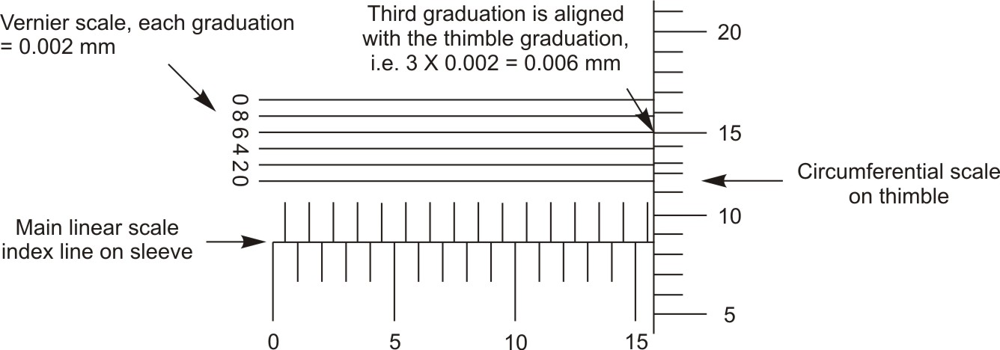
Figure 9: Vernier micrometer scalesThe reading of the vernier metric micrometer is accomplished by adding the whole millimeter, the half-millimeter, and the hundredths of a millimeter just as before in the case of general micrometer. Further to this reading is added the number of two-thousandths of a millimeter which is read off of the vernier scale. In the above diagram shown, 0.006 mm must be added.
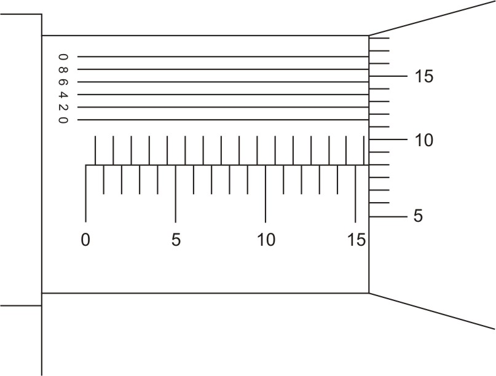
Figure 10: Taking metric vernier micrometer readingOutside micrometer (micrometer caliper) is essentially a precision screw mounted in an open frame with suitable scales. It is used for very precise outside measurements. The measuring surfaces are at the ends of the stationary anvil and the movable spindle. The construction and parts of outside micrometer are described below.
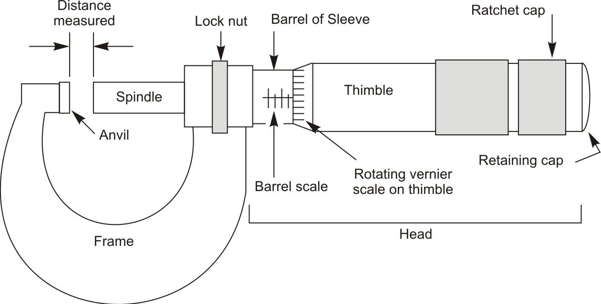
Figure 11: Outside micrometer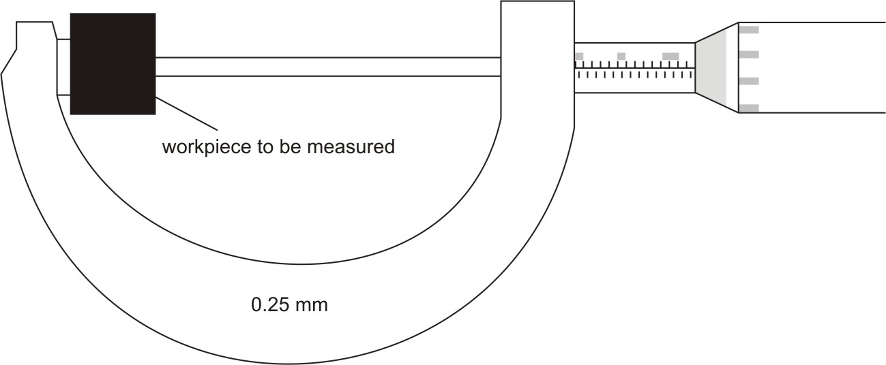
Figure 12: Setting a workpiece between the spindle and anvil of micrometerThe first step in making a measurement is to use a clean rag to wipe any dirt from the measuring surfaces of the spindle and anvil. Any dirt in this area will give you an inaccurate reading. Also wipe off the area to be measured on the valve stem.
The line of the physical measurement should be such that it is coincident with the measurement axis of the instrument. If the measurement is out of line, it may lead to misreadings caused by deflections in the instrument. You cannot get a correct measurement with a micrometer unless the anvil and spindle are at right angles to the part being measured. Make sure the spindle and anvil are centered exactly across the diameter of the specimen or the reading will be undersize.
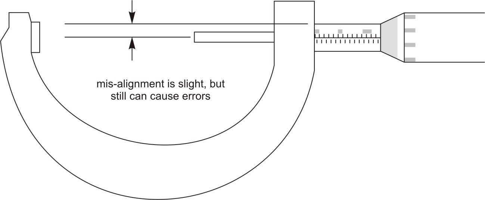
Figure 13: Alignment of workpiece with spindle and anvil of micrometerKeep in mind when you are taking a micrometer measurement that there is a right way to hold the micrometer when measuring an object. You can hold a micrometer with one hand by resting the frame in the palm of the hand; insert one finger through the frame and use the thumb and forefinger to turn the spindle. You will find that this gives you good control over the position of the anvil and spindle.
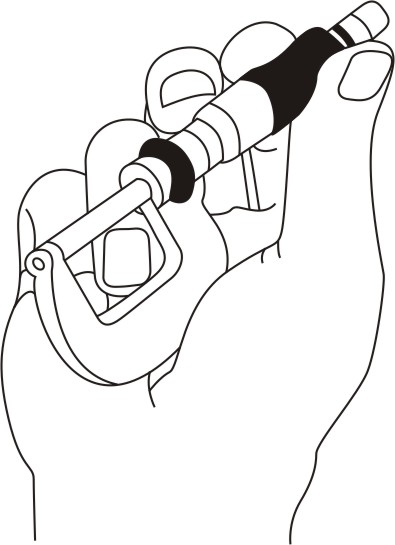
Figure 14: Holding the micrometerOr, Place the micrometer over the area of specimen you wish to measure, by gripping the frame at two places. Use the right hand to make adjustments with the thimble, and then return the hand to the frame.
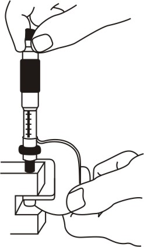
Figure 15: Correct micrometer and finger positions for taking measurement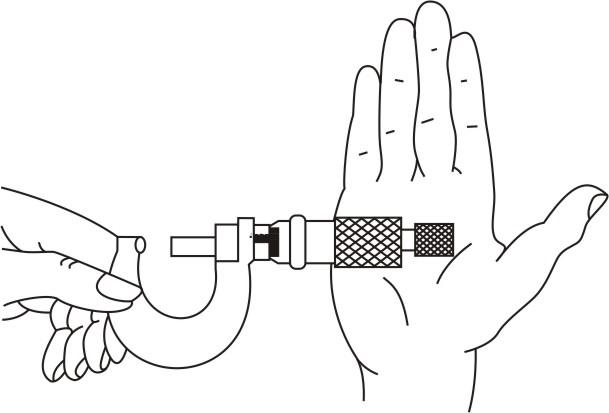
Figure 16: Roll the thimble gently for long spindle movements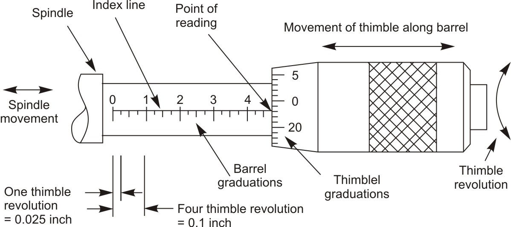
Figure 17: Head of Micrometer in English SystemIn this system, the scale (longitudinal line) on the sleeve is of 1 inch, divided into 10 equal graduations, each equal to 0.1 inch, marked from 1 to 10, known as main divisions. Further each main division is subdivided into four equal parts, each equal to 0.025 inch, known as subdivision.
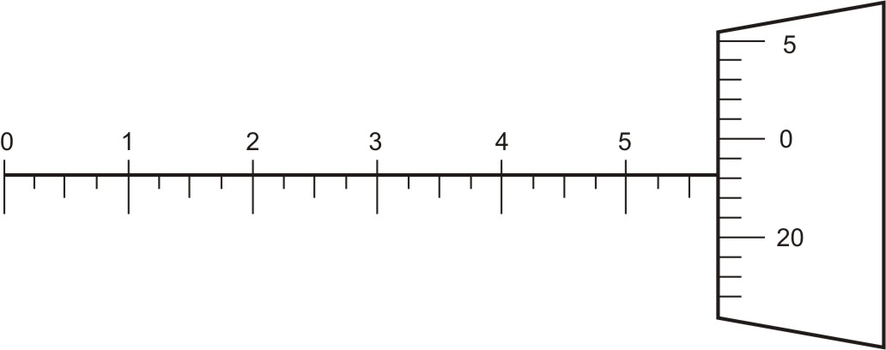
Figure 18: Inch micrometer scaleInside the sleeve, a spindle is threaded with 40 threads in 1 inch, threads having a pitch exactly of 1/40 inch or 0.025 inch. Which means that one revolution of the screw moves the spindle by 0.025 inch toward or away from the anvil. Therefore, 40 turns of the screw will move the spindle exactly 1 inch (40 x 0.025 = 1.000).
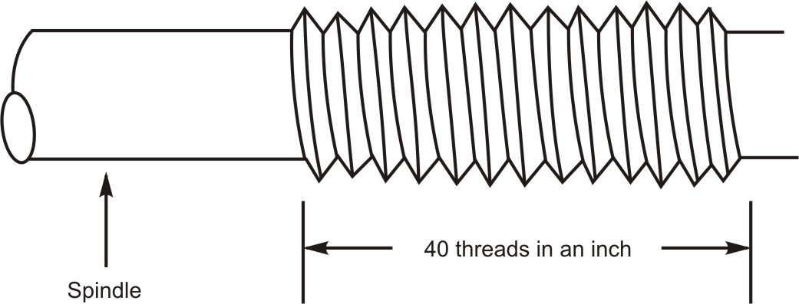
Figure 19: Pitch of spindle in English systemThe beveled edge on the front of the moving thimble is graduated around with 25 equal divisions because the thimble and spindle travel 0.025 inch per revolution.
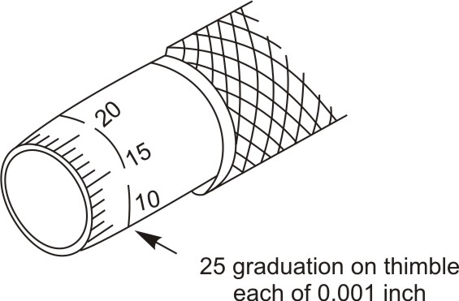
Figure 20: Circumferential scale on the thimble is graduated with 25 equal divisions each of 0.001 inchEvery fifth line is numbered from 0 to 25. These divisions make it possible to read the amount of spindle travel for partial revolutions. Therefore, each complete revolution of the thimble advances the spindle towards or away from anvil by 0.025 inch. For instance, a partial revolution from one thimble mark to the next is 1/25th of a revolution, which moves the spindle by 0.001 inch.
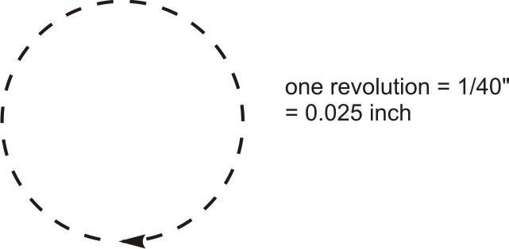
Figure 21: One revolution of thimble in English system translates the spindle by 0.025 inchThis means each graduation on the thimble is equal to 0.001 inch. Thus least count of inch micrometer is 0.001 inch.
| ← Tutorial 4 | Tutorial 6 → |